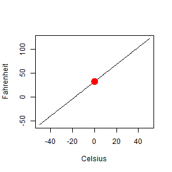

This project is a Celsius converter to Fahrenheit
The points studied are the followings:
- Celsius definition
- Fahrenheit definition
- Conversion
Rosa Estriegana Valdehita
Universidad de Alcala
This project is a Celsius converter to Fahrenheit
The points studied are the followings:
Celsius, also known as centigrade, is a scale and unit of measurement for temperature.
It is named after the Swedish astronomer Anders Celsius (1701-1744), who developed a similar temperature scale.
The degree Celsius (\(^\circ\) C) can refer to a specific temperature on the Celsius scale as well as a unit to indicate a temperature interval.
0 \(^\circ\) C was defined as the freezing point of water and 100 \(^\circ\) C was defined as the boiling point of water.
Fahrenheit (symbol \(^\circ\) F) is a temperature scale based on one proposed in 1724
by the German physicist Daniel Gabriel.
The Fahrenheit scale was the primary temperature standard for climatic, industrial and medical purposes in English-speaking countries.
In the late 1960s and 1970s, the Celsius scale replaced Fahrenheit in almost all of those countries with the notable exception of the United States.
Celsius to Fahrenheit : (\(^\circ\) C x 1.8) + 32 =\(^\circ\) F
Celsius<-c(-50:50)
Fahrenheit <- Celsius * 1.8 + 32
plot(Celsius, Fahrenheit, type="l")
points(x = 0, y=32, lwd= 8, col= "red")
